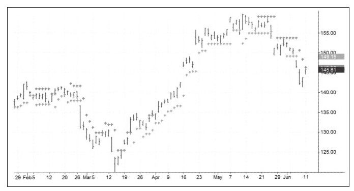

安全区止损的理念来源于金融市场中的信号和噪音，如果趋势是信号，那么回调就是噪音。电子工程师使用过滤器过滤噪音让信号顺利通过，如果能识别并测量市场的噪音水平，我们就可以把止损设在噪音之外，只要信号还是趋势运动我们就一直处在持仓状态中。这个概念的细节在《走进我的交易室》中讨论过，并且已经在很多交易程序中实施了。
我们可以用多种方法定义趋势，比较简单且直接的方法是用价格与22天EMA的相对位置来定义趋势。在涨势中我们把噪音定义为今日价格中低于前一天低点的部分，这部分与趋势相反；如果是跌势我们把噪音定义为今日价格中高于前一天高点的部分。交易者需要决定测量噪音的回测期的长度，回测期不能太长但必须对交易有实质意义，只需日线图中最近一个月左右的数据就可以了（如图5-16所示）。

下面两段话是从《走进我的交易室》中摘录出来的：
如果在上涨趋势中把所有噪音部分标出来并汇总，除以噪音发生的总次数，就得出回测期的噪音均值，它反映了当前上升趋势中的平均噪音水平。把止损设得太近容易弄巧成拙，所以要把止损设在远离噪音均值的地方，用噪音均值乘以平均噪音系数（初始值为2，也可用大于2的数值），用昨天最低价减去上面的这个计算结果就得出了止损应该设置的地方。如果今天的最低值比昨天低就不移动止损，这种方法只允许将止损向上移动。
下跌趋势与上涨趋势的规则相反。当22日EMA均线显示目前处于下跌趋势，计算回测期噪音均值并乘以系数，用昨日最高价加上上述数值，就得出今日的止损设置位置。同样，止损只向下移动不向上移动。
和其他方法一样，安全区方法也不能取代独立思考，这种方法不会让交易者一劳永逸。交易者必须选择回测期及噪音系数来求得安全区，通常系数在2~3之间就非常安全了，但这应当基于研究的市场数据。